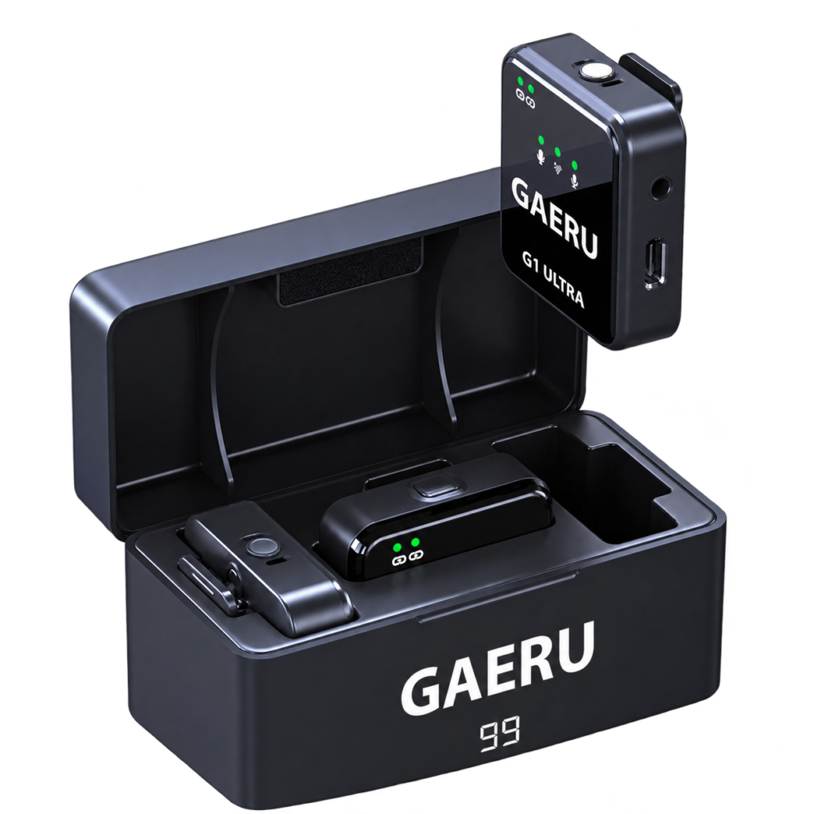

Đúng đường âm thanh
Đối chiếu đầu thu và phụ kiện với cổng nhận âm của thiết bị.
MICRO KHÔNG DÂY
Chuẩn bị đường âm thanh phù hợp cho thiết bị và bối cảnh ghi hình của bạn.
Chọn GAERU G1 ULTRA ›
NHỎ GỌN ĐỂ BẮT ĐẦU
Đối chiếu đầu thu và phụ kiện với cổng nhận âm của thiết bị.
Kẹp micro ở vị trí ổn định, tránh tóc, vải và đồ trang sức.
Chọn đúng nguồn âm trong ứng dụng, điều chỉnh mức thu nếu có.
Ghi thử, nghe lại và kiểm tra kết nối trước nội dung chính.
GAERU TRONG CUỘC SỐNG CỦA BẠN
GIẢI ĐÁP NHANH
Chọn phiên bản và phụ kiện theo cổng kết nối trên thiết bị. Kiểm tra tương thích với GAERU trước khi dùng đầu chuyển.
Mở hướng dẫn G1 ULTRA để đối chiếu cổng đầu vào, chọn nguồn âm và ghi thử.
CÂU CHUYỆN TIẾP THEO BẮT ĐẦU TỪ BẠN